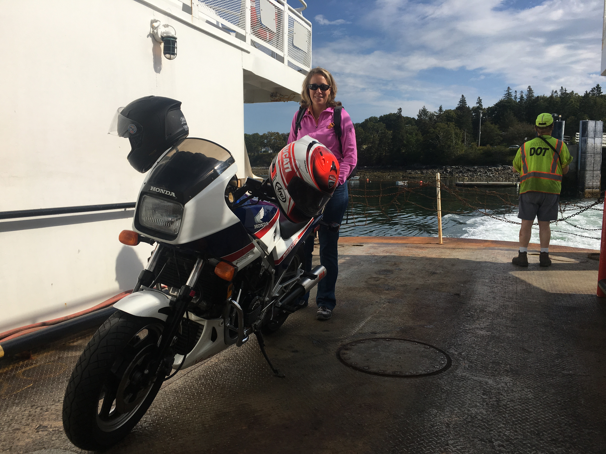

The Cloud House (44° 10' 25.95", -68° 24' 26.73")
We came to Swan’s Island in the fall of 2017 almost by chance. We wanted to take the ferry out to Swan’s Island, check it out for the day, and come back to MDI. As it turns out the ferry was full, no car slots left, but they were able to squeeze our Honda VF700 Interceptor on. We spent just a few hours there, not wanting to wait to the last ferry. In that short time we went to the lighthouse, enjoyed a delicious lunch at TIMS and managed to cover most of the paved roads, driving by the Cloud house and noting the “for sale” sign.
{kind=link}
We returned to Swan’s Island for a week in July of 2018 and began to look for a property in earnest. We were staying on the western part of the island, three miles down a twisting, bumpy, mostly single lane seasonal road. We didn’t want that kind of limited access so we started to narrow our property search to the "Atlantic" side of the island. That area offered ready access with paved roads, more privacy than in the villages on Burnt Coat Harbor and a wonderful view of the mountains of Acadia. We made a subsequent trip to Swan's Island in September, via a boat we rented for a day. From that vantage point we were able to see the property from the water and get a better sense what a view from the house would be with some clearing.
{kind=link}

In the next months we set our sights on acquiring the Cloud house. It had privacy, plenty of land and water frontage and a long history, being built in the 1850’s. After an inspection to determine if the house was solid and worth restoring (it was) we made an offer and it was accepted. The prior owner’s family had owned it for 70 years and left us a wonderful note welcoming us.

Since then we were able to engage a local contractor with a long history of similar renovations and the work has begun. The demolition inside is completing, kitchen and bath planning is wrapping up and reconstruction is starting!

External to the house, site work has also begun clearing brush and beginning to take down trees to open up the view
{kind=link}